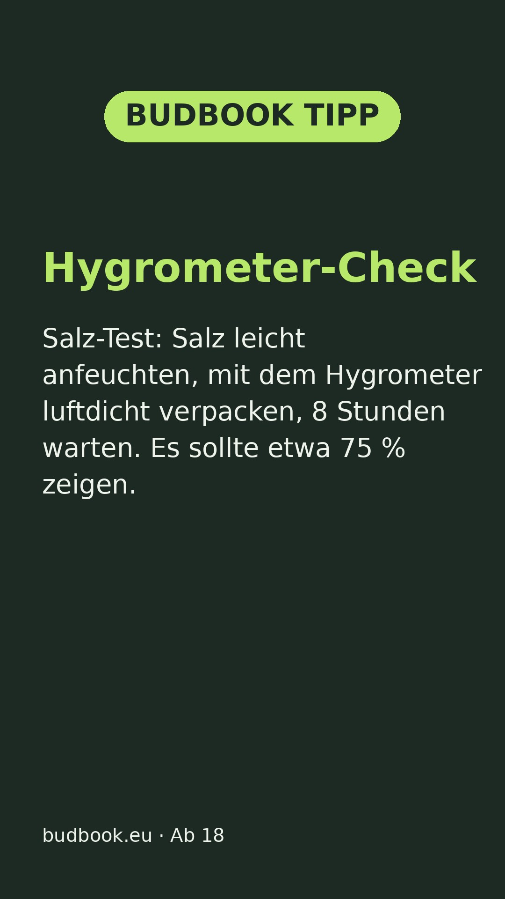
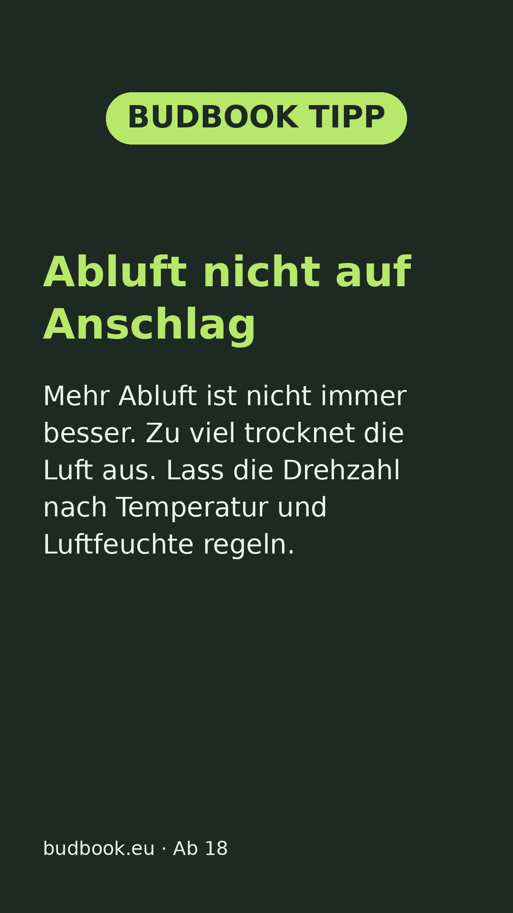
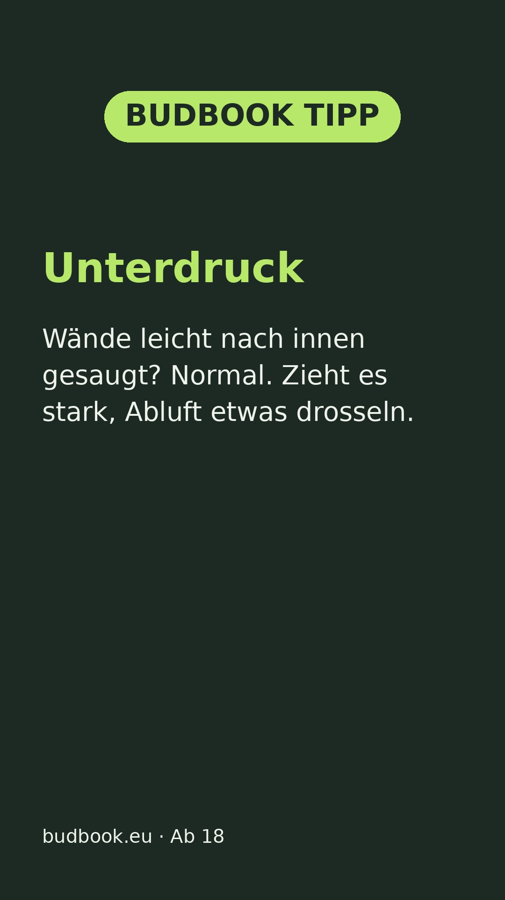
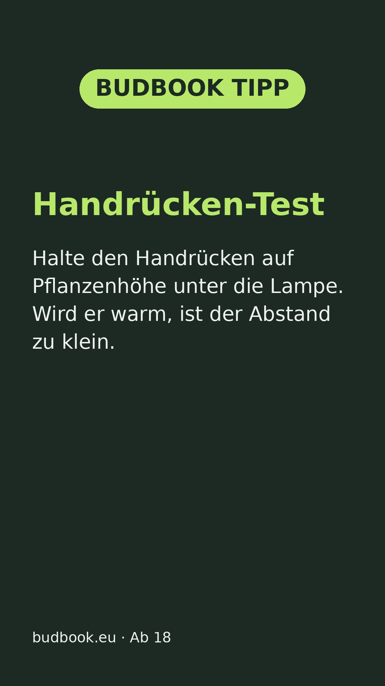

1
Tipp-Story: Hygrometer-Salztest
STORY · Di 1.12. 18:00 · wartet
STORY · Di 1.12. 18:00 · wartet

Warum: Kurzer, speicherbarer Technik-Tipp (So geht's). Die Reels dazu fehlen diese Woche, siehe Mail.
Kanäle: Instagram, Facebook

Warum: Kurzer, speicherbarer Technik-Tipp (So geht's). Die Reels dazu fehlen diese Woche, siehe Mail.
Kanäle: Instagram, Facebook

Warum: Technik-Tipp, Mythos-Auflösung zu Abluft/Luftfeuchte.
Kanäle: Instagram, Facebook
Fotos einfach als Antwort auf die Mail schicken, hochkant, Licht an.
Warum: Evergreen-Erklärer zum VPD, nennt die BudBook-Funktion (VPD automatisch). Nur Technikbilder, darum auch TikTok. Geändert 16.11.: erstes Wort jetzt „Vau-Pe-De“ (wie vom Besitzer gewünscht).
Kanäle: Instagram, Facebook, YouTube, TikTok
Kennst du dein VPD gerade? Schreib es in die Kommentare 👇 VPD in 20 Sekunden: Der Wert zeigt, wie durstig die Luft im Zelt ist. Zu niedrig heißt zu feucht und Schimmelgefahr. Zu hoch heißt zu trocken, es verdunstet zu viel. Als Faustregel gelten 0,8 bis 1,2 kPa. Das hängt von Phase und Hersteller ab, nimm es als Orientierung. BudBook rechnet das VPD automatisch aus Temperatur und Luftfeuchte. Controller: @acinfinity.de @acinfinityinc Alle Werte im Video sind Beispielwerte. Ab 18. #growzelt #vpd #klimacheck #growtagebuch #budbook
VPD in 20 Sekunden: Er zeigt, wie durstig die Luft im Zelt ist. Faustregel 0,8 bis 1,2 kPa (Beispielwerte). Kennst du dein VPD? Ab 18. #growzelt #vpd #klima #app #tagebuch
YouTube-Titel: VPD in 20 Sekunden erklärt #Shorts

Warum: Kurzer Tipp zur Abluft, Vorgeschmack auf das Reel am Mittwoch.
Kanäle: Instagram, Facebook
Warum: Klima/Technik-Tipp zur Abluft; nur Technikbilder, darum auch TikTok. Frage am Ende holt Kommentare.
Kanäle: Instagram, Facebook, YouTube, TikTok
Wie stark saugt dein Zelt? Schreib es in die Kommentare 👇 Zeltwände leicht nach innen gesaugt? Das ist Unterdruck und meistens gewollt: Die Abluft zieht etwas mehr Luft raus, als nachströmt. So kommt frische Luft gezielt über die Zuluft rein und nicht durch jede Ritze. Saugen die Wände stark ein, dreh die Abluft ein Stück herunter. Viele Controller regeln die Drehzahl nach Temperatur und Luftfeuchte. BudBook zeigt dir den Verlauf vom Controller. Controller: @acinfinity.de @acinfinityinc Alle Werte im Video sind Beispielwerte. Ab 18. #growzelt #abluft #growtech #growtagebuch #budbook
Zeltwände saugen sich nach innen? Das ist Unterdruck und meistens gewollt. Wie stark saugt dein Zelt? Beispielwerte. Ab 18. #growzelt #abluft #klima #app #tagebuch
YouTube-Titel: Unterdruck im Zelt: gut oder schlecht? #Shorts

Warum: Kurzer Technik-Tipp passend zum Lampen-Reel am Vortag.
Kanäle: Instagram, Facebook
Warum: Technik-Mythos mit klarer Regel (Herstellerabstand, Handrücken-Test), endet mit Kommentarfrage. Mix-Format „Mythos oder Fakt“.
Kanäle: Instagram, Facebook, YouTube (kein TikTok: Reel zeigt Pflanzen)
Wie hoch hängt deine Lampe gerade? Schreib es in die Kommentare 👇 Mythos oder Fakt: "Je näher die Lampe, desto besser." Fakt ist: Zu nah bringt Hitze und Lichtstress. Halte dich beim Abstand an die Angabe des Herstellers. Dazu der Handrücken-Test: Wird er auf Pflanzenhöhe warm, ist die Lampe zu nah. Und miss die Temperatur dort, nicht an der Zeltwand. Licht: @growthejungle_official Alle Werte im Video sind Beispielwerte. Ab 18. #growzelt #lampenabstand #growtech #growtagebuch #budbook
YouTube-Titel: Lampenabstand: Mythos oder Fakt? #Shorts
Warum: Klima-Tipp mit Beispielwerten: erklärt kurz die Technik (kalte Luft hält weniger Wasser) und was hilft. PROBELAUF.
Kanäle: Instagram, Facebook, YouTube (kein TikTok: Endbild zeigt Pflanzen)
Wie hoch ist die Luftfeuchte in deinem Zelt nachts? Schreib es in die Kommentare. Luftfeuchte nachts: Kaum geht das Licht aus, steigt sie. Der Grund: Die Luft kühlt ab, und kalte Luft kann weniger Wasser halten. Im Beispiel springt der Wert von 60 auf 70 Prozent. Zu feuchte Luft nachts begünstigt Schimmel. Was hilft: Abluft nachts durchlaufen lassen oder per Hygrostat steuern. Den Sensor in Pflanzenhöhe hängen, nicht oben am Zeltdach, sonst misst du am Klima vorbei. Alle Werte im Video sind Beispielwerte. Ab 18. #growzelt #luftfeuchtigkeit #growtech #growtagebuch #budbook
YouTube-Titel: Luftfeuchte nachts: warum sie steigt #Shorts
Stand: 22.11.2026 09:15 · Ab 18